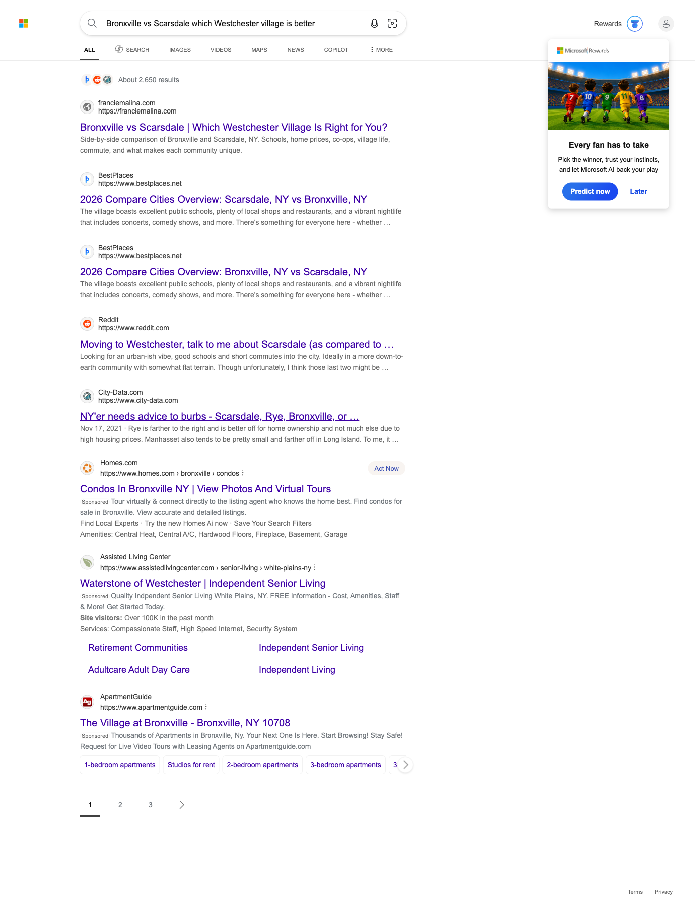
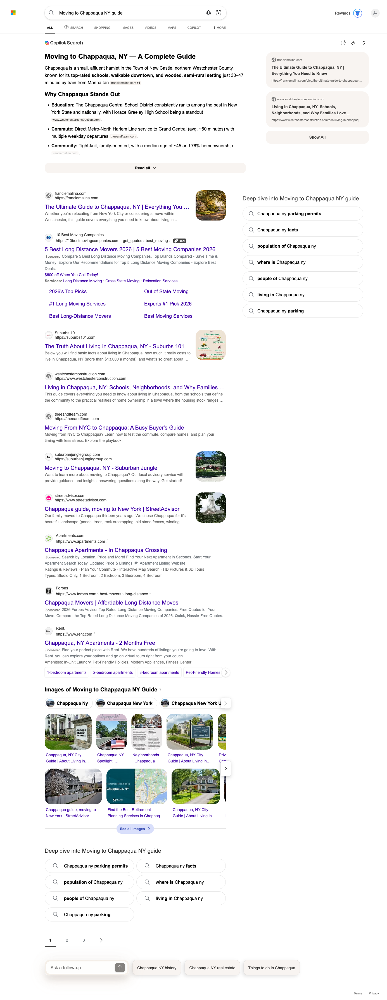

We re-ran the same structured citation probe this month that we ran on May 5, using the identical 12 buyer and seller queries against the two AI surfaces we can measure with machine evidence: Microsoft Bing / Copilot and Perplexity. That is 24 query-and-engine cells, checked the same way both months, so this is a clean month-over-month comparison.
The team's machine-confirmed citation footprint grew from 6 of 24 cells in May to 10 of 24 cells in July. Five cells are new citation wins, one earlier citation dropped, and the rest of the gain held from last month. Every result in this report is confirmed by the detection probe, not inferred from a screenshot.
Two things drove the growth. The comparison-query moat around Bronxville vs Scarsdale held across both engines, which is durable authority now proven two months running. And franciemalina.com broke into a new town cluster, earning fresh citations on Chappaqua queries where it was absent from the May Bing and Perplexity checks. On the second domain, scarsdalehome.com continued to earn Perplexity citations on direct Scarsdale-relocation questions.
We track twelve buyer-intent queries for franciemalina.com and scarsdalehome.com across four AI answer engines: Bing, Perplexity, ChatGPT, and Google AI Overviews. A query counts as cited only when our tracking machine-detects one of those two domains among the sources an engine used to build its answer, so this measures presence, never ranking. June is compared against the May 5 baseline check, and every comparison stays within a single engine.
Computed cell by cell from the two probe runs (May 5 baseline and July 5), using the same 12 queries on each engine.
| AI Surface | Cells Cited (May 5) | Cells Cited (Jul 5) | Held | Won | Lost |
|---|---|---|---|---|---|
| Microsoft Bing / Copilot | 2 | 4 | 2 | 2 | 0 |
| Perplexity | 4 | 6 | 3 | 3 | 1 |
| Total | 6 | 10 | 5 | 5 | 1 |
| Query | Bing / Copilot | Perplexity | Google AI Overview (first check, Jul 5) |
ChatGPT (first check, Jul 5) |
|---|---|---|---|---|
| Which is better Bronxville or Scarsdale NY | ✓franciemalina.comHeld | ✓franciemalina.comHeld | ○ | – |
| Bronxville vs Scarsdale which Westchester village is better | ✓franciemalina.comHeld | –Lost | ○ | ✓franciemalina.com |
| Is Chappaqua NY a good place to live | ✓franciemalina.comWon | ✓franciemalina.comWon | ✓franciemalina.com | – |
| Moving to Chappaqua NY guide | ✓franciemalina.comWon | – | ○ | – |
| Best Hudson Line villages for NYC commuters | – | ✓franciemalina.comHeld | ○ | ✓franciemalina.com |
| Dobbs Ferry vs Hastings on Hudson which is better | – | ✓franciemalina.comWon * | ○ | – |
| Moving to Scarsdale NY guide | – | ✓scarsdalehome.comHeld | ○ | – |
| Moving to Scarsdale NY from Texas | – | ✓scarsdalehome.comWon * | ○ | – |
| Is Bronxville NY a good place to live | – | – | ✓franciemalina.com | – |
| Bronxville NY property tax rate | – | – | – | – |
| Best Westchester towns for NYC commuters | – | – | ✓franciemalina.com | – |
| Which Westchester rivertown should I live in | – | – | ○ | – |
Reading the matrix: the month-over-month score counts the Bing and Perplexity columns only, 10 of 24 cells cited this run (Bing 4, Perplexity 6), up from 6 in May. The Google AI Overview and ChatGPT columns are first checks with no May baseline, so they carry no won, held, or lost tags and stay outside that 10-of-24 total; on those two, franciemalina.com is cited on 3 of 12 and 2 of 12 queries. * Won marks two Perplexity cells whose May check was inconclusive rather than a confirmed absence.
Status: The team's strongest single citation asset held. Across the two phrasings of the Bronxville-vs-Scarsdale comparison and the two engines, franciemalina.com is cited on three of four cells this month, the same footprint it earned in May apart from one Perplexity phrasing that dropped.
| AI Surface | Status vs May | Evidence |
|---|---|---|
| Bing / Copilot (both phrasings) | Held | franciemalina.com present in the results for both phrasings, machine-confirmed on July 5 |
| Perplexity ("which is better") | Held | franciemalina.com present in the answer's source list, machine-confirmed |
| Perplexity ("which village is better") | Lost | Rendered cleanly but no longer cites either domain on this exact phrasing |

Status: franciemalina.com's Chappaqua content moved from absent in May to cited in July. It now appears for "Is Chappaqua NY a good place to live" on both Bing and Perplexity, and for "Moving to Chappaqua NY guide" on Bing. This is the citation footprint expanding into a new town cluster beyond the Bronxville and Scarsdale core.
| AI Surface | Status vs May | Evidence |
|---|---|---|
| Bing / Copilot ("is Chappaqua a good place") | Won | franciemalina.com Chappaqua guide appears as a Copilot source card and in organic results; not cited in May |
| Bing / Copilot ("moving to Chappaqua guide") | Won | Same guide appears as a Copilot source and in organic results; not cited in May |
| Perplexity ("is Chappaqua a good place") | Won | franciemalina.com present in the answer's source list, machine-confirmed; not cited in May |

The two-domain strategy splits the work: franciemalina.com carries the whole-county comparison content, and scarsdalehome.com owns the direct Scarsdale-relocation intent. This month the split showed up cleanly in the data.
Honest scope note: scarsdalehome.com is not cited on Bing on any of the 12 queries this run, and its confirmed footprint is two Perplexity cells. It is a focused, working second domain on relocation intent, not yet a broad co-equal to franciemalina.com. The value is that it lets the two domains own different question types without competing for the same slot.
Both scarsdalehome.com citations are on Perplexity and appear in the citation matrix above.
The site went through a content pivot, and the Scarsdale-cluster material is being rebuilt. July is the month newly published pages begin contributing to the citation footprint measured here. We are not promising specific placements, because AI citations are earned over weeks as engines re-crawl and re-rank; what we can say is where the leverage is, based on this month's data.
Chappaqua just converted from absent to cited on two engines off a single depth page. Deepening that cluster is the most direct way to turn this month's new wins into a durable second moat next to Bronxville and Scarsdale.
"Bronxville vs Scarsdale which Westchester village is better" slipped on Perplexity while the sister phrasing held. Refreshing the comparison page so it answers both phrasings cleanly is the lever to recover that cell.
The second domain works on relocation intent but is thin elsewhere. Building out the Scarsdale neighborhood pages gives it more surface area to be cited on, and starts to give it a footprint on Bing, where it is currently absent.
Bronxville "good place to live," the property-tax query, and the commuter-town queries are not cited on either engine yet. These are the clearest next targets to move from zero to cited as the rebuilt content indexes.